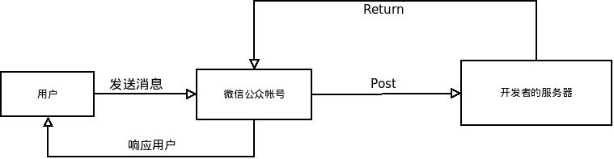

上个月搭了一个微信公众平台，后台用的是python（之前用bootle,现在改用django），当然用什么语言是无关紧要的。
近期服务器环境从bae迁回本地环境（学校给了个服务器），bae上调试不方便，而且稳定性没有保障，变动频繁。当然国内的开放平台基本这样，bae相对算是不错的，似乎由于开源潮流势不可挡的缘故，各家公司不情愿地做个开放平台，深怕被对手甩下，至少在舆论上不落后，又不理解开放的意义，只能做得很蹩脚。当然如果练手的话，bae还是挺不错的。
之所以换用django，主要是为了后期的功能加强考虑，之后涉及到session，数据库之类的问题的话，用django熟悉些，扩展起来可能会容易些。
如果在bae/sae之类的云环境下部署的话，推荐使用bootle，django配置起来麻烦些。bootle很小巧便捷，仅是一个文件而已，不会出现依赖问题，极其适合练手。bootle入门。bae上需要注意一下第三库的配置，就是说你在这里不能使用pip，得自行打包依赖的库，一并上传，之后添加到系统路径里就行。如果在bae下具体可参考here 。模仿这个项目布局就行，deps里放置第三方库。 在index.py里加上
deps_path = os.path.join(os.path.split(os.path.realpath(__file__))[0],'deps')
if deps_path not in sys.path:
sys.path.insert(0, deps_path)
实际上写一个微信公众平台要比开发一个网站简单得多。不需要前台，不需要美工，后台的逻辑也极其简单。
关于微信
waiting...
重要的部分其实和使用什么语言写后台无关，重在熟悉微信的api，数据格式之类
基本思路
先说说基本的思路。理解了之后，至于用什么语言作后台来实现，都是细节问题。之后我会演示使用bootle和django来实现（初学者推荐使用bootle。）
你需要有以下以下东西：
- 一个公网ip
- 服务器使用80端口
- 分配一个url给微信使用
- 申请公众帐号，为了获得token（之后会用到）
that's all
那么我们来看看，从用户发送消息，到收到公众帐号的回应，期间发生了什么。

可以看出，微信扮演中介的角色。
waiting...
与微信通信
首先登录你的公众账户，绑定url
如上图所示，我们站在服务器的角度，我们需处理接收微信发送过来的请求，请求分两种，一种是get，一种是post。我么大多时间在处理post过来的数据。这里需要学习的东西主要是数据的格式，参考微信的开发者文档。
在服务器与微信公众帐号建立关联的时候，微信会验证服务器是否合格。技术上的细节是微信会get请求绑定的url，我们需要按要求返回数据，这样就能通过微信的认证。直接上代码：
bootle里这样写：
#-*- coding:utf-8 -*-
#! /usr/bin/env python
from bottle import *
import hashlib
@get("/")
def checkSignature():
token = "your token" #登录你的微信公众平台，里面可以查到
signature = request.GET.get('signature', None)
timestamp = request.GET.get('timestamp', None)
nonce = request.GET.get('nonce', None)
echostr = request.GET.get('echostr', None)
tmpList = [token, timestamp, nonce]
tmpList.sort()
tmpstr = "%s%s%s" % tuple(tmpList)
hashstr = hashlib.sha1(tmpstr).hexdigest()
if hashstr == signature:
return echostr
else:
return None
django里这样写
# -*- coding: utf-8 -*-
from django.http import HttpResponse
import hashlib
def handleRequest(request):
if request.method == 'GET':
response = HttpResponse(checkSignature(request),content_type="text/plain")
return response
else:
return None
def checkSignature(request):
TOKEN = "your token"
signature = request.GET.get("signature", None)
timestamp = request.GET.get("timestamp", None)
nonce = request.GET.get("nonce", None)
echoStr = request.GET.get("echostr",None)
token = TOKEN
tmpList = [token,timestamp,nonce]
tmpList.sort()
tmpstr = "%s%s%s" % tuple(tmpList)
tmpstr = hashlib.sha1(tmpstr).hexdigest()
if tmpstr == signature:
return echoStr
else:
return None
你如果用的是django的话，我假设你已经熟悉它了，那么urls.py之类常规配置就不介绍了。
好～
这样一来，我们的服务器就通过微信的认证了。
下面进入真正有趣的地方。处理用户的请求，并给予答复。
案例学习，自动作诗
我对诗词比较感兴趣，那我们就来写一个自动作诗的微信公众号吧。一旦你熟悉的其中的逻辑，你可以发挥你的想象力，写个你自己感兴趣的公众号，思路和大多细节都是基本一样的。
直接上代码：(bae环境下基于bootle)
#! /usr/bin/env python
# coding=utf-8
#自动作诗
__author__ = 'wwj'
from bottle import *
import hashlib
#解析xml
import xml.etree.ElementTree as ET
#解析json，给客户端发送数据，用json格式
import json
import requests #第三方库
from BeautifulSoup import BeautifulSoup #第三方库，bae下自带
app = Bottle()
@app.get("/")
#url接口，接收微信的消息
def check_signature():
#检验token，如果没有这个的话，该服务器会被微信验证失败
token = "your token" #set your token here
signature = request.GET.get('signature', None)
timestamp = request.GET.get('timestamp', None)
nonce = request.GET.get('nonce', None)
echostr = request.GET.get('echostr', None)
tmpList = [token, timestamp, nonce]
tmpList.sort()
tmpstr = "%s%s%s" % tuple(tmpList)
hashstr = hashlib.sha1(tmpstr).hexdigest()
if hashstr == signature:
return echostr
else:
return None
def parse_msg():
#解析来自微信的请求，request用于传递请求信息，这是bootle的知识，与微信无关，核心只是普通的url get部分内容
recvmsg = request.body.read()
root = ET.fromstring(recvmsg)
msg = {}
for child in root:
msg[child.tag] = child.text
return msg
def set_content():
content = '''添加自动作诗模块，输入"诗词#登山"自动写作主题为登山的诗词,目前仅支持平水韵五绝，之后会添加其他体裁'''
return content
def writepoetry(yb="1",tc="1",mt=u"无题"):
#yb是韵部，tc是体裁，mt是命题
#mt必须是u
cleanmt=mt.encode("GBK")
input={'yb':yb, "tc":tc,'mt':cleanmt}
r = requests.post("http://www.poeming.com/web/main.asp", data=input)
cleandate=r.content.decode("GBK") #现在是utf-8，在程序中保持为unicode,直到输出才化为utf-8
outdate=(cleandate.encode("utf-8"))
#print outdate
soup = BeautifulSoup(outdate)
p = soup.findAll('p')
#p是list
#p[1]是主要内容
p_text=p[1].text[2:]
return p_text
##成功后的内容
#p_list=p_text.split(u"。")#使用句号分割取出
#print ''.join(p_list[1:])
#Out[8]: {'confidence': 0.99, 'encoding': 'GB2312'}
#mypoetry=writepoetry(yb="2",tc="1",mt=u"无题")
@app.post("/")
def response_msg():
#返回消息到客户端
msg = parse_msg()
#解析接收到的用户消息
#处理文本消息，注意必须按照微信接口要求的格式，图片消息的话应该给出图片url,多参考别人的源码
textTpl = """<xml>
<ToUserName><![CDATA[%s]]></ToUserName>
<FromUserName><![CDATA[%s]]></FromUserName>
<CreateTime>%s</CreateTime>
<MsgType><![CDATA[text]]></MsgType>
<Content><![CDATA[%s]]></Content>
<FuncFlag>0</FuncFlag>
</xml>"""
#<MsgType><![CDATA[text]]></MsgType> 这里不用%s才能显示关注？？
#图片模板
pictextTpl = """<xml>
<ToUserName><![CDATA[%s]]></ToUserName>
<FromUserName><![CDATA[%s]]></FromUserName>
<CreateTime>%s</CreateTime>
<MsgType><![CDATA[news]]></MsgType>
<ArticleCount>1</ArticleCount>
<Articles>
<item>
<Title><![CDATA[%s]]></Title>
<Description><![CDATA[%s]]></Description>
<PicUrl><![CDATA[%s]]></PicUrl>
<Url><![CDATA[%s]]></Url>
</item>
</Articles>
<FuncFlag>1</FuncFlag>
</xml> """
content = set_content()
#处理关注事件
#调试成功，技巧：控制变量，从最少元素开始，逐步增加
if msg["MsgType"] == "event":
echostr = textTpl % (
msg['FromUserName'], msg['ToUserName'], str(int(time.time())),
'''添加自动作诗模块，输入"诗词#登山"自动写作主题为登山的诗词,目前仅支持平水韵五绝，之后会添加其他体裁''')
return echostr
if msg['Content'] == "hi":
#msg['Content']用户消息，汉语还是很好解析的，没有乱七八糟编码问题
echostr = textTpl % (
msg['FromUserName'], msg['ToUserName'], str(int(time.time())),
"hi") #填充内容
return echostr
elif "诗词" in msg['Content']: #“#”只能用中文
try:
content=msg['Content'].split("#")[-1]
except:
content=msg['Content'].split("#")[-1]
#content="怀"
mypoetry=writepoetry(yb="2",tc="1",mt=content)
#msg['Content']用户消息，汉语还是很好解析的，没有乱七八糟编码问题
echostr = textTpl % (
msg['FromUserName'], msg['ToUserName'], str(int(time.time())),
mypoetry) #填充内容
return echostr
else:
echostr = textTpl % (
msg['FromUserName'], msg['ToUserName'], str(int(time.time())),
content)
return echostr
#call bae serive
from bae.core.wsgi import WSGIApplication
import sys, os.path
deps_path = os.path.join(os.path.split(os.path.realpath(__file__))[0],'deps')
sys.path.insert(0, deps_path)
#create application
application = WSGIApplication(app)
自动作诗的数据，来自稻香老农的网络版自动作诗机，解析数据时注意一下编码问题就行。具体见代码。另外目前只能自动写绝句，其他功能有空添加。
推荐使用案例驱动式的学习方法，一开始就埋头到文档里，无趣且乏味，可以先看几个成功的案例，试着模仿，运行，修修改改，先跑起来,至于案例的来源，博客和github是个巨大的宝库，我闲来比较喜欢逛逛github，总有意外的收获。
后记
案例中有趣的地方是，我们借用requests来访问其他网站，这样一来我们可以轻易使用混搭开发模式(mashup),这是个很有趣的话题，也是我一直关注的一个方向。开源与开放平台是未来。
发挥你的想象力吧，想象力是你在数字世界的唯一边界。借用requests，可以做许多有趣的工作，比如写一个根据输入的电影名称，去豆瓣抓取电影资讯的工作平台;或者根据输入的学号，去获取学生的成绩/课程表之类;再或者根据输入的照片，识别人脸,建立人群关系（使用face++）.
这里我们可以抽象出一个共性，我们的后台实际也在扮演中介角色，或者理解为入口，从广泛的网络里获取用户需要的内容，至于可以干什么，这里的唯一限制是你的想象力^_^